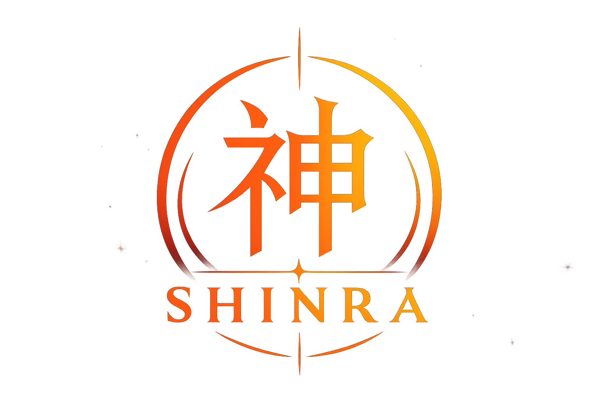

神
Bienvenue sur
SHINRA
L'expérience Shinobi ultime

Concentration du Chakra
Calcul de la trajectoire gravitationnelle...
0%
Réception des rouleaux de techniques...
Territoire (Map)
Chargement...
Portail Web
shinra-community.fr
Ralliement
discord.gg/shinra
Prêt à écrire ta légende ninja ?